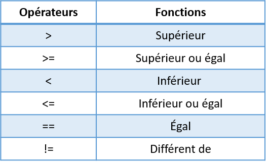

Chapitre 7 Algorithme
7.1 Construire une fonction
Il est possible de programmer ses propres fonctions. Dans l’exemple ci-dessous on construit une fonction imcq ui prend en entrée deux arguments poids et taille. La fonction effectue un calcul et renvoi l’IMC. Pour construire une fonction, on doit obligatoirement faire appel au mot clé function. Le mot clé return n’est pas obligatoire. Cependant, par convention, une fonction renvoie toujours un résultat qui peut aussi être un message d’information sur le bon déroulement de celle-ci. Les arguments sont précisés entre parenthèses ( ). Les traitements s’effectuent entre accolades { }.
Lorsqu’on vérifie la classe de l’objet imc en mémoire, on constate qu’il est bien de type function.
## [1] "function"Puis c’est le même principe que les autres fonctions pour l’utiliser :
## [1] 20.39542Il est possible de préciser des arguments par défaut. Ils sont à saisir dans la définition des arguments :
## [1] 20.761257.2 Construire une structure conditionnelle
Pour construire des structures conditionnelles en R, on utilise le mot clé if avec la ou les conditions à tester entre parenthèses ( ). Si la condition retourne TRUE, l’ensemble des commandes présentent dans les accolades { } seront exécutées.
## [1] "Total supérieur à 4"
## [1] "Fin du traitement"On peut aussi utiliser le mot clé else pour exécuter un traitement lorsque la condition retourne FALSE.
Attention, petite particularité de R, il faut que le mot clé else soit sur la même ligne de l’accolade qui le bloc if.
Dernière particularité, jusqu’à présent on pouvait se passer de la fonction print pour afficher des résultats dans la console. Désormais, cette fonction est obligatoire dans les structures conditionnelles.
x <- c(1,3,5)
if ( sum(x) > 4 )
{
print("Total supérieur à 4")
print("Fin du traitement")
} else
{
print("Total inférieur ou égale à 4")
print("Fin du traitement")
}## [1] "Total supérieur à 4"
## [1] "Fin du traitement"On peut donc réaliser n’importe quelS tests logiques dans une structure conditionnelle.
On peut par exemple tester la classe d’un objet avec les fonctions is.classe_a_tester comme is.numeric qui renvoie TRUE ou FALSE.
Pour rappel, voici la liste des opérateurs de comparaisons :

Pour rappel, voici la liste des opérateurs logiques :

7.3 Construire une boucle
Pour répéter un traitement et éviter les copier-coller, on a souvent recours aux boucles. Celles qu’on retrouve principalement dans le langage R est la boucle for et while. La syntaxe utilisée est très proche de celles des structures conditionnelles. Attention, jusqu’à présent on pouvait se passer de la fonction print pour afficher des résultats dans la console. Désormais, cette fonction est obligatoire dans les boucles comme pour les structures conditionnelles.
7.3.1 La boucle for
La boucle for parcourt les éléments d’un vecteur qu’on lui indique en entrée.
for ( i in c("Pierre","Paul","Jacques"))
{
print(paste("Salut ", i))
print("Traitement terminé !")
}## [1] "Salut Pierre"
## [1] "Traitement terminé !"
## [1] "Salut Paul"
## [1] "Traitement terminé !"
## [1] "Salut Jacques"
## [1] "Traitement terminé !"La boucle for parcourt les vecteurs d’un data frame / matrice qu’on lui indique en entrée.
## Min. 1st Qu. Median Mean 3rd Qu. Max.
## 4.300 5.100 5.800 5.843 6.400 7.900
## [1] "Traitement terminé !"
## Min. 1st Qu. Median Mean 3rd Qu. Max.
## 2.000 2.800 3.000 3.057 3.300 4.400
## [1] "Traitement terminé !"
## Min. 1st Qu. Median Mean 3rd Qu. Max.
## 1.000 1.600 4.350 3.758 5.100 6.900
## [1] "Traitement terminé !"
## Min. 1st Qu. Median Mean 3rd Qu. Max.
## 0.100 0.300 1.300 1.199 1.800 2.500
## [1] "Traitement terminé !"
## setosa versicolor virginica
## 50 50 50
## [1] "Traitement terminé !"7.3.2 La boucle while
La particularité de la boucle while réside dans la condition qui est testée à chaque itération. La boucle s’arrête lorsque la condition retourne FALSE. Cela signifie aussi qu’il faut créer un objet qu’on incrémentera au fur et à mesure afin d’éviter de générer une boucle infinie.
i <- 1
noms <- c("Pierre","Paul","Jacques")
while( i <= length(noms))
{
print(paste("Salut ", noms[i]))
print("Traitement terminé !")
i <- i + 1
}## [1] "Salut Pierre"
## [1] "Traitement terminé !"
## [1] "Salut Paul"
## [1] "Traitement terminé !"
## [1] "Salut Jacques"
## [1] "Traitement terminé !"## [1] 4i <- 1
while ( i <= ncol(iris))
{
print(summary(iris[,i]))
print("Traitement terminé !")
i <- i + 1
}## Min. 1st Qu. Median Mean 3rd Qu. Max.
## 4.300 5.100 5.800 5.843 6.400 7.900
## [1] "Traitement terminé !"
## Min. 1st Qu. Median Mean 3rd Qu. Max.
## 2.000 2.800 3.000 3.057 3.300 4.400
## [1] "Traitement terminé !"
## Min. 1st Qu. Median Mean 3rd Qu. Max.
## 1.000 1.600 4.350 3.758 5.100 6.900
## [1] "Traitement terminé !"
## Min. 1st Qu. Median Mean 3rd Qu. Max.
## 0.100 0.300 1.300 1.199 1.800 2.500
## [1] "Traitement terminé !"
## setosa versicolor virginica
## 50 50 50
## [1] "Traitement terminé !"## [1] 67.4 Exercice
7.4.1 Sujet
Dans cet exercice, on utilise le fichier starwars qui décrit les caractéristiques des personnes principaux de la saga.
Le dataset starwars.csv décrit les caractéristiques des personnages principaux de la saga.
Voici un extrait du dataset :
Importez le fichier starwars.csv
Construisez une fonction appelée
build_plotqui prend en entrée un vecteur
- s’il est de type numérique la fonction affiche un diagramme en boîte et retourne un résumé du vecteur
- s’il n’est pas de type numérique et présente 15 modalités différentes ou moins, la fonction affiche un diagramme en barre et retourne un résumé du vecteur
- sinon, la fonction n’affiche rien et retourne uniquement “Pas de traitement”
- Créez une boucle qui parcourt toutes les colonnes du data frame en appliquant la fonction
build_plotpour chacune.
7.4.2 Correction
- Importez le fichier starwars.csv
- Construisez une fonction appelée
build_plotqui prend en entrée un vecteur
- s’il est de type numérique la fonction affiche un diagramme en boîte et retourne un résumé du vecteur
- s’il n’est pas de type numérique et présente 15 modalités différentes ou moins, la fonction affiche un diagramme en barre et retourne un résumé du vecteur
- sinon, la fonction n’affiche rien et retourne uniquement “Pas de traitement”
build_plot <- function(x) {
if (is.numeric(x)) {
boxplot(x)
return(summary(x))
} else if (length(unique(x)) <= 15)
{ barplot(sort(table(x)))
return(summary(x))
} else
return("Pas de traitement")
}- Créez une boucle qui parcourt toutes les colonnes du data frame en appliquant la fonction
build_plotpour chacune.